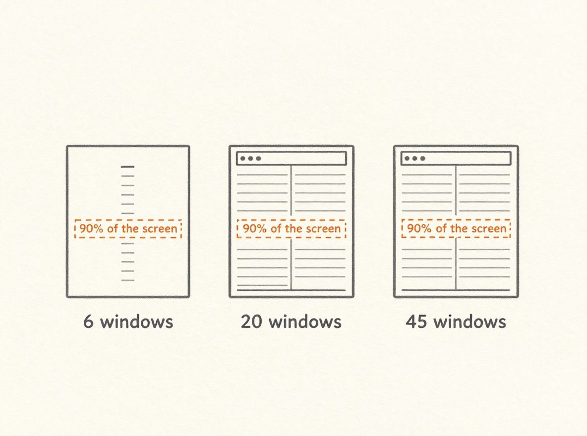
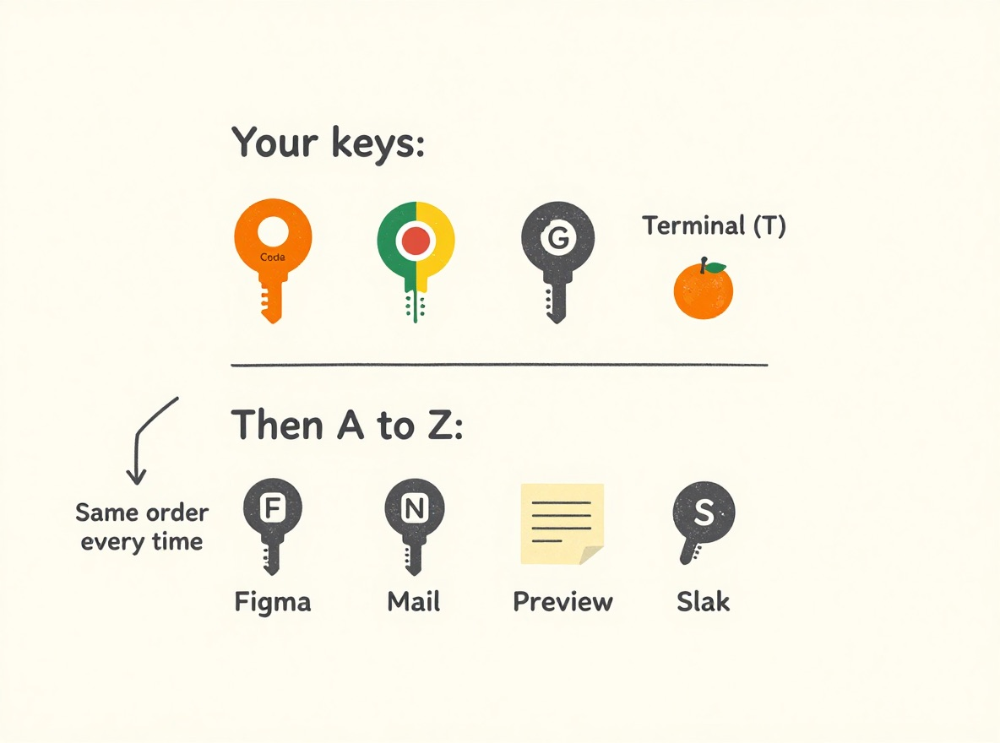
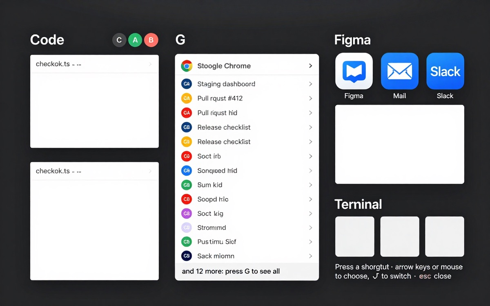

Features / Columns that fit your screen
Columns that fit your screenEvery title readable. Nothing to scroll.
Apps and their windows are laid out in columns wide enough to read full titles. The switcher spreads across your screen before it grows tall, so everything is in view at once.
● Apps stay in the same order every time
Wide first, so it stays short.
The switcher uses up to 90% of your screen. It adds columns before it grows tall, but only when a column makes a real difference to the height.
- Columns are 320 points wide. Long titles like "Inbox — Re: launch checklist" fit on one line.
- Busy apps get their own column. Apps with a few windows share one.
- The tallest column is kept short. So your eyes don't travel far.

AI draft · replaceApps stay where you left them.
The list doesn't jump around based on what you used last. Apps you've given a key come first, then everything else. Each group is in A to Z order. After a few days you know where to look.
- Your apps first. The ones you set keys for in Settings → Shortcuts, from A to Z.
- Then A to Z. Every other app, by name.
- Arrows follow the columns. ↑↓ move down a column, ←→ move across. See Arrows and mouse.

AI draft · replaceIt only shortens an app that can't fit.
An app is cut short only when its windows won't fit in a column as tall as your screen. Then the last line says how many more there are. Press the app's key, or click that line, to see every one.

AI draft · replaceShow as much or as little as you like.
In Settings → General.
Good to know.
Will I ever have to scroll?
No. Everything fits on screen. An app with more windows than a screen-height column can hold shows "and N more", and its key opens a view with all of them.
Why don't apps move to the front when I use them?
So you always know where to look. Apps with your keys come first, then the rest in A to Z order, every time.
Can I make it smaller?
Turn off "Show app names" for a compact list of icons and keys. Turn off "Show apps without a shortcut" to see only the apps you've given a key.
Does it show window previews?
No. It lists windows by title, which is what lets it fit dozens of them on screen and read them at a glance.
Press ⌥⇥. Then the next key you want.
Free for the Mac. No account, nothing running in the background, and every app has a key the moment it's installed.
Download Window Switcher for Mac